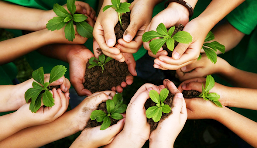

saiba qual e o nosso objetivo:
O Projeto Verde é uma iniciativa inovadora que visa promover a sustentabilidade através de incentivos práticos para os participantes. A ideia central é simples: para cada planta que você plantar, você ganha um desconto em comidas em uma rede de estabelecimento. Esse projeto une a paixão pela preservação do meio ambiente com a motivação econômica, incentivando mais pessoas a se envolverem em ações verdes
como funciona?

quer saber como ganhar um lanche 100% gratis?
 01.32.24_806af1a1.jpg)
Plantar uma árvore é mais do que simplesmente colocar uma semente na terra; é um ato de esperança e compromisso com o futuro. Cada folha que cresce é um lembrete de que nossas ações, por menores que sejam, podem criar algo duradouro e belo. Ao plantar, não apenas contribuímos para um planeta mais verde, mas também cultivamos a ideia de que podemos fazer a diferença. Que cada passo dado hoje seja uma raiz firme para um amanhã mais sustentável. Lembre-se, grandes mudanças começam com pequenas ações. Plante, cuide e inspire o mundo ao seu redor. 🌱
Participe de Mais Iniciativas Sustentáveis
O Projeto Verde é só o começo! Ao se envolver com essa iniciativa, você abre portas para participar de outros eventos e projetos que fazem a diferença. Imagine estar sempre à frente, contribuindo para ações que transformam o mundo e, de quebra, recebendo recompensas por isso. Nossa comunidade está sempre em busca de novas formas de promover a sustentabilidade, e queremos que você faça parte de cada passo dessa jornada. Fique atento para futuras campanhas, desafios e eventos que incentivam o cuidado com o meio ambiente. Juntos, podemos fazer muito mais! 🌱🌟